Merhabalar. Firmware Reverse Engineering için ilk bloguma hoşgeldiniz. Bu yazıda TP-Link’in Archer AX 21 V4.6 modemin firmware’i reverse edeceğiz. Firmware indirmek için TP-Link’in orijinal sayfasına göz atabilirsiniz.
Öncelikle indirdiğimiz Firmware’in bilgilerine göz atalım:
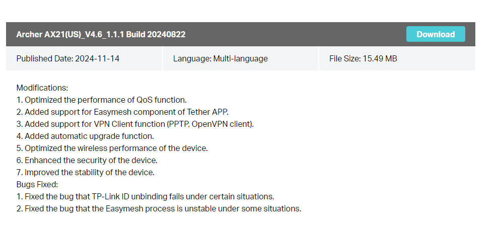
Görüldüğü üzere 14 Kasım 2024 yılında yayınlanmış. Yani neredeyse 1 ay önce yayınlanmış bir firmware. Birkaç hatanın düzeltildiği, optimizelerin yapıldığı ve yeni şeyler eklendiğini görebiliriz.
Fiziksel olarak bu router’a sahip olmadığım için bu blogta sadece firmware analiz ederek yelteneceğim.
Linux Versiyonu Bulma
Özellikle firmware reverse engineering’de sıklıkla kullanılan binwalk denilen aracı kullanacağız. Bu araç bize firmware için çeşitli bilgiler sunabilir.
Öncelikle binwalk’a analiz edeceğimiz firmware verelim:
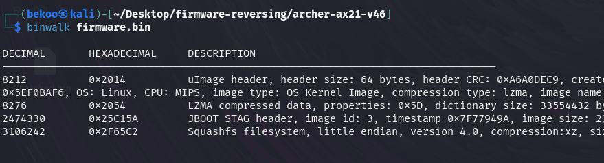
Evett okumaya üşendiğimiz birkaç karmaşık gibi görünen çıktılar elde ettik. Peki nedir bunlar efenimm?
Bu gördüğünüz çıktılar ilgili firmware’in offsetlerini içermektedir. Ancak sadece offset değerleri verilmiyor yanlarında bu alanlar için açıklama da veriyor bu binwalk aracı. Gözümüz hemen bu çıktıdaki Decimal ve Hexdecimal değerlerine kaysın:
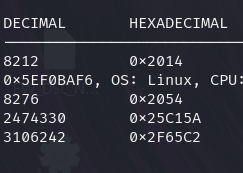
İşte offset değerleri bunlar. Hem decimal hem de hexdecimal olarak binwalk aracı bize bunları gösteriyor. Şimdi ilk odağımızı Bootloader (U-Boot)‘a yönlendirelim ve mimarisine bir göz atalım.
Bu etapta dd aracını kullanabiliriz. Bunun için aşağıdaki komutu çalıştıralım:
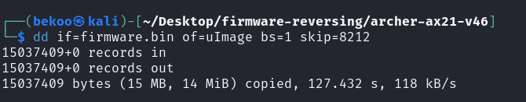
Verdiğimiz değerlere dikkat edelim. if ile hedef firmware’i veriyoruz. of ile çoğaltılan veriyi nasıl kaydedeceğimizi belirtiyoruz. skip ile ise belirli bir byte miktarını atlayarak kopyalama işlemine başlıyor. 8212 değeri verdiğime dikkat edin. Bu ise, dd aracın 8212 byte kadar sonrasındaki verileri kopyalacağı anlamına gelir. Bu değer binwalk’tan bulduğumuz uImage’ın offset değeri.
Bu kopyalama sonucunda uImage adlı bir dosya elde edeceğiz:
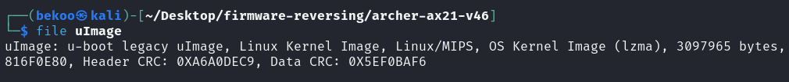
Kopyaladığımız dosyayı incelediğimizde u-boot Legacy uImage olduğunu doğrulayabiliriz. Ayrıca arch’ın MIPS olduğunu da görebiliriz.
Linux versiyonu aramak için ise tekrar binwalk çıktımıza bir göz atalım:
Tekrar offsetlere göz atarsak LZMA ile sıkıştırılmış bölüme gidebiliriz. .lzma uzantılı olarak dosyayı alalım ve dosyayı çıkartalım:
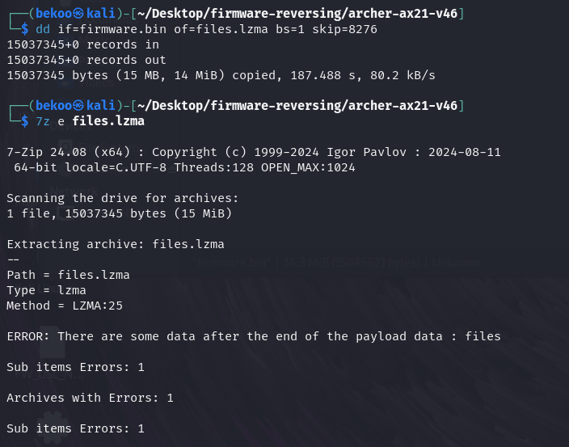
Bu adımlardan sonra elimizde files olarak bir dosya elimizde olmalı. Amacımız sadece strings ile Linux versiyonuna göz atmak olacak:
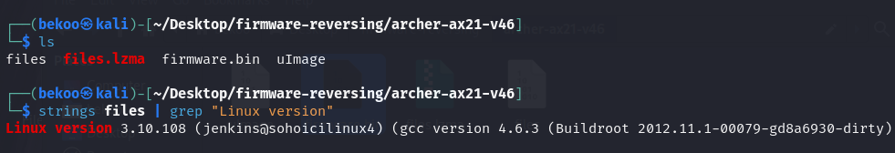
Kullanılan Linux versiyonu 3.10.108 ve GCC için ise 4.6.3 kullanılmakta. Bu ikisi de eski versiyondur.
Linux’un 3.10.108 versiyonu 5 Kasım 2017 yılında çıkmış:
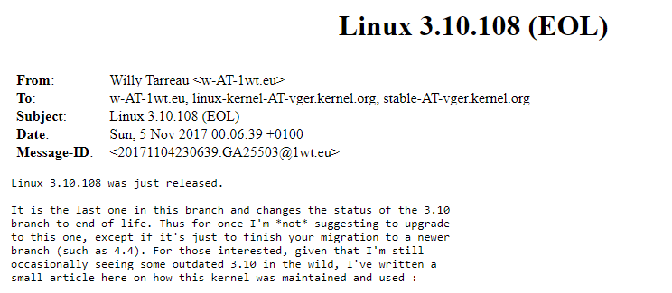
GCC’nin 4.6.3 versiyonu ise 1 Mart 2012 yılında çıkmış:
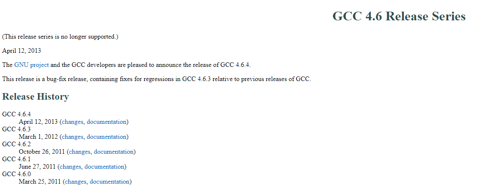
Açıkçası ben Firmware Reverse Engineering alanında yeni olsam da, 2024 yılında sunulmuş bir firmware’in eski Linux ve GCC versiyonu kullanmasını mantıklı bulmadım. Bu security açısından risk oluşturabilecek bir şey.
Bunu gördüğüm zaman kendime şunu sordum: “Bunu farklı firmalar da yapıyor mu ve normal mi?”. Her ne kadar da bunun normal olmadığını düşünsem de farklı bir firmanın Router Firmware’ini analiz ederek Linux versiyonunu karşılaştırmak istedim. Daha sonra kısa araştırmadan sonra ASUS’un RT-AX58U Router Firmware’i analiz etmeye karar verdim.
Bu Firmware için bilgiler ise şu şekilde:
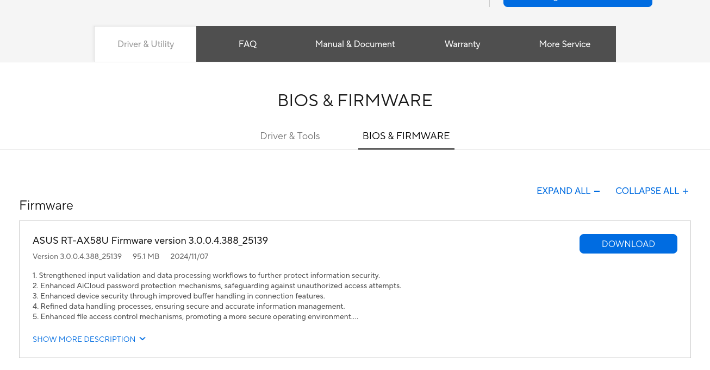
Aynı şekilde bu Firmware ise neredeyse 1 ay önce çıkmış. Odağımızın dağılmaması için hızlıca bulduğum sonucu paylaşacağım. Fakat size tavsiyem daha çok pratik yapmak isterseniz bu blogu okuduktan sonra benim gibi ASUS Router’ın bu Firmware’ini analiz edebilirsiniz:
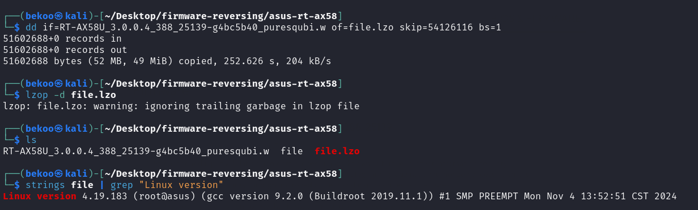
Sonuca baktığımızda bu Firmware için Linux’un 4.19.183 ve GCC’nin 9.2.0 versiyonu kullanılmakta.
Linux’un 4.19.183 versiyonu 24 Mart 2021‘de çıkmış:
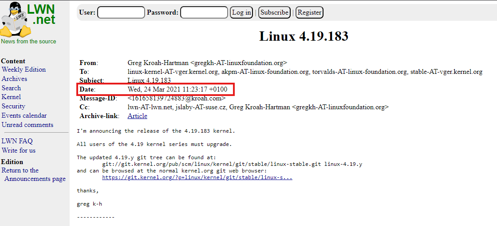
GCC’nin 9.2.0 versiyonu ise 12 Ağustos 2019 yılında çıkmış
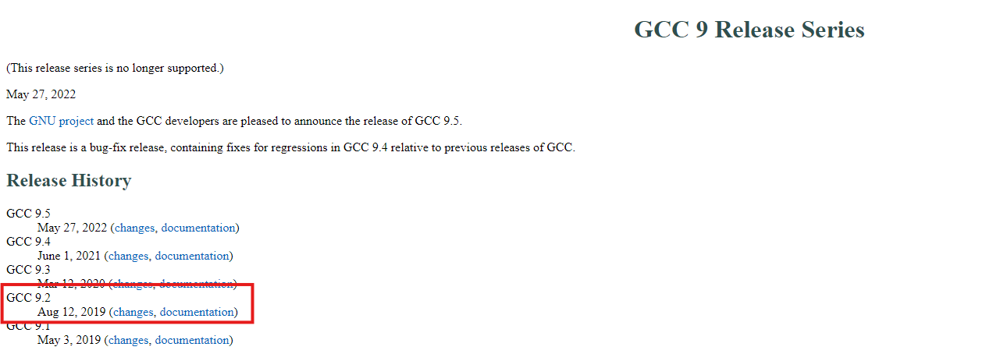
ASUS RT-AX58U’un bu Firmware’inde ise analiz ettiğimiz TP-LINK Firmware’ına kıyasla daha yakın bir tarihteki sürümler kullanıldığını görebiliriz ancak yine de bu sürümlerde eski.
Bunun nedenini ilerideki bloglarda tartışabiliriz. Şimdi analizimize devam edelim.
Analizimiz sonucunda bu Firmware için bulduğumuz Linux sürümü 3.10.108‘dır. Şimdi ise bu Firmware’in Linux dosyalarına bir göz atalım.
Linux Dosyalarını Bulma
binwalk ile elde ettiğimiz offset çıktılarına bir tekrar göz atalım:
Burada Linux dosyalarını bulmak için Squashfs alanına yönelebiliriz. Çoğunlukla Linux dosyaları burada bulunurlar.
Yine aynı şekilde .sqfs uzantısı ile kopyalayalım:
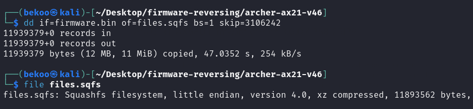
Tekrarlamaktan zarar gelmez, 3106242 offset değerini verdiğime dikkat edin. Burası Squashfs ile sıkıştırılmış alanın offset değeri.
Dosyayı incelediğimizde zaten Squashfs ile sıkıştırıldığını doğrulayabiliriz. Şimdi ise bunu çıkartmamız gerekecek ancak eğer kurulu değilse Squashfs-tools paketi indirilmesi gerekiyor. Debian sistemlerde aşağıdaki komutla indirebilirsiniz:
sudo apt install squashfs-tools -y
İndirdikten sonra unsquashfs ile çıkartalım:
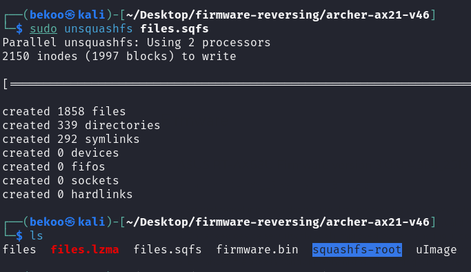
Çıkarma işleminden sonra squashfs-root adlı bir dosya elde ediyoruz. İçerisine göz atalım:
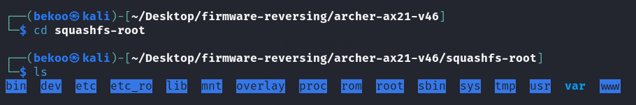
Göründüğü üzere Linux dosyalarına eriştik. Bu kısımda yapabileceğimiz birçok şey bulunuyor. Bir bug, hashler veya şifreler gibi artık analiziniz neye dayanıyorsa ona göre araştırma yaparak ilerleyebilirsiniz. Mesela /etc/shadow içerisindeki şifrelere göz atabiliriz:
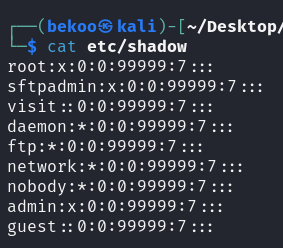
Benim gibi yeni iseniz bu Linux dosyalarını araştırabilir ve diğer offset bölümlerini kopyalayıp göz atabilirsiniz.
Simüle Etme
Son olarak ise Firmware’i emule (simüle) edelim. Bunun için chroot ve qemu kullanabiliriz. Fakat ondan önce Firmware’in mimarisini bilmemiz gerekiyor.
Linux versiyonunu ararken uImage’a göz attığımızda mimarinin MIPS olduğunu zaten görmüştük. Ancak yine de çıktıyı bir kez daha kontrol edelim:
Göründüğü üzere MIPS olduğunu görebiliriz. Ayrıca da Little Endian.
Qemu kullanacağımız için /usr/bin/qemu-mipsel-static programını squashfs-root dosyasına kopyalayalım ve ardından chroot çalıştıralım:
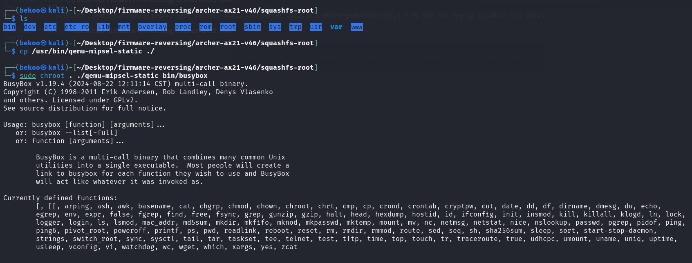
Başarılı bir şekilde simüle etmiş olduk. Busybox’ın sürümüne göz attığımızda da 1.19.4 kullanıldığını görmekteyiz. Bu da 2012 yılında çıkmış bir eski sürümdür.
Sonuç
Firmware Reverse Engineering için ilk blogumda basitçe bir firmware’in nasıl analiz edebileceğimizi gördük. Eğer araştırmalara devam etmek isterseniz konu içerisinde bahsettiğim ASUS’un Firmware’ini analiz edebilirsiniz. Ayrıca da referanslara da göz atabilirsiniz.
Umarım bu konu işinize yaramıştır efenimmm iyi çalışmalarr.